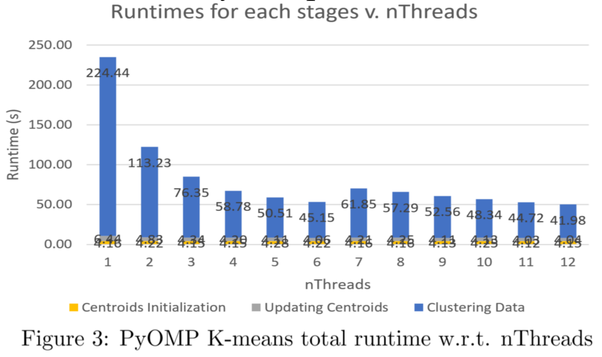
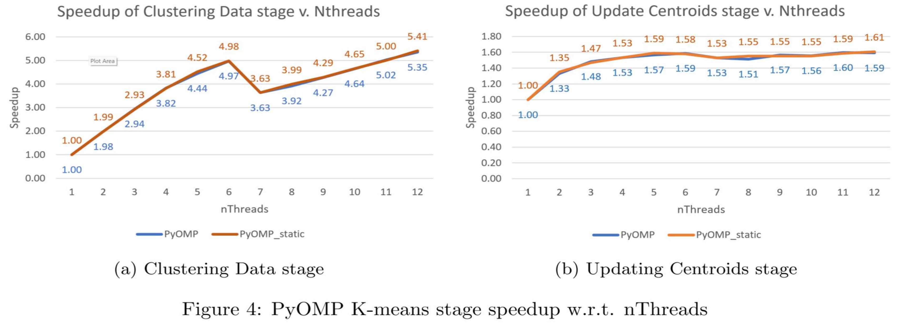
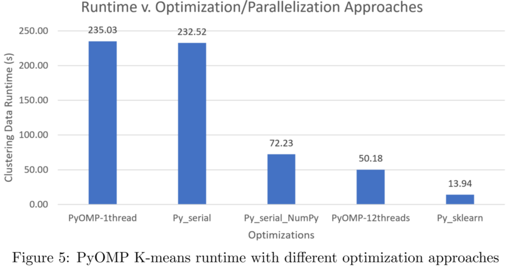
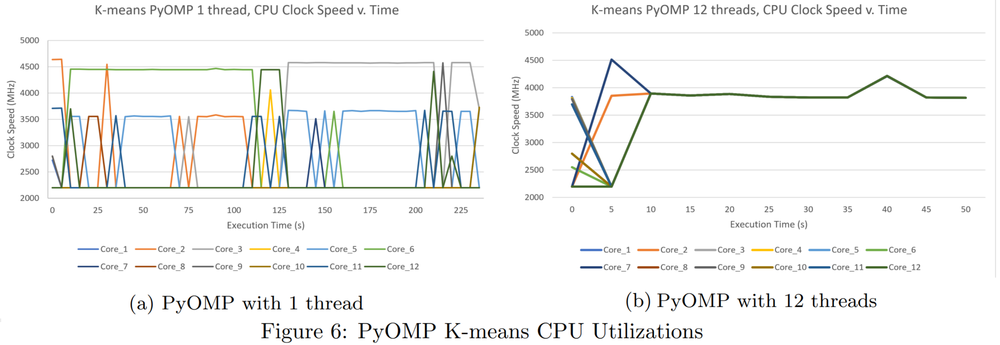
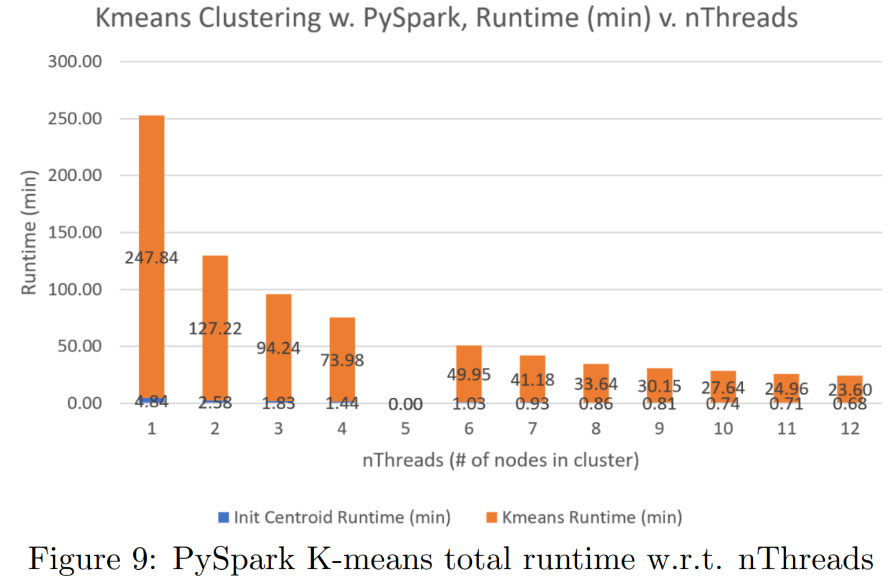
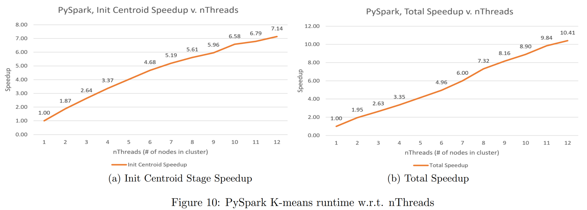
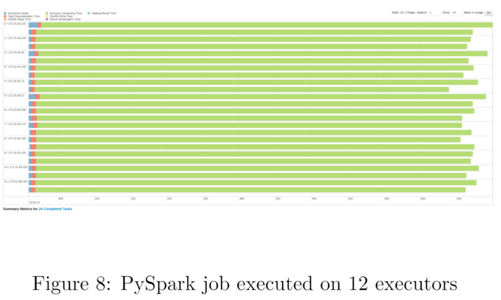

PyOMP
Hardware Setup
We ran the experiments on one of our personal computer with AMD Ryzen5 5600x
as CPU. AMD 5600x has 6 cores (12 threads), maximum clock speed of 4.6 GHz. The
pricing of AMD Ryzen5 5600x is 299 $USD.
Serial Implementation Analysis
Runtime v. nThreads
The runtime for the three stages in k-means are shown in Fig 3. Clustering Data
stage accounts for most of the runtime. This is expected since clustering data points
involves heavy computation on Euclidean distances.

Clustering Data Analysis
In Fig 4a, from 𝑛𝑇ℎ𝑟𝑒𝑎𝑑 = 1 to 6, the speedups increased almost linearly and
reached 4.98x. An interesting phenomenon occurred when 𝑛𝑇ℎ𝑟𝑒𝑎𝑑 = 7 , the
performance decreased but later increased to 5.41x with 𝑛𝑇ℎ𝑟𝑒𝑎𝑑 increased to 12.
The reason is that the chip has 6 cores, each with 2 threads. Synchronizing and
communicating across the cores had less overheads. Threads that shares the resource
in a core has more communication overheads and contentions.
Atomic Action Analysis
Atomic Action Analysis
Fig 4b illustrated the speedups of Updating Centroids stage w.r.t. the number of
threads executing. The atomic actions speedups were limited at around 𝟏. 𝟔𝐱 when
𝑛𝑇ℎ𝑟𝑒𝑎𝑑 increases. The atomic operations in each threads contented for execution of
writes to the summarized data points, thus caused the speedup ceiling in the stage.

Different Optimization Approaches
In Fig 5, we see that the same program but optimized with NumPy operations
achieves a speedup comparing with plain implementation. Our PyOMP implementation
with 12 threads speedup out-performed the NumPy-optimized program by 1.44x. The
fastest scikit-learn implements has more optimized K-means algorithm with built-in
OpenMP support on multi-threading.

CPU Utilization Analysis
To better inspect the threads utilization during execution, we logged the CPU clock
rate. For PyOMP parallelized implementation, some logs are shown in Fig 6. As
demonstrated in Fig 6a, there is always 1 core with the clock speed at about 4.5 GHz
due to context swtiching. Fig 6b demonstrated the cores were executing exact same
computation.

Conclusion – PyOMP
Our implementation of k-means clustering parallelized with PyOMP achieved
5.41x speedup on a 6 core, 12 threads CPU; and
4.98x speedup with 6
cores. The
speedup out-performed the NumPy-optimized implementation by
1.44x. We
examined the maximum speedup of
1.6x for atomic operations. For AMD Ryzen5
5600x, the speedup with over 6 threads declined due to resource sharing within a core.
We inspected the execution of PyOMP on switching context with CPU clock speed.
PySpark
Hardware Setup
We leveraged AWS EC2. t3.large. uses Intel Xeon Platinum 8000 series CPU
with 2 threads per core and clock speed up to 3.0 GHz. Our experiment showed the
maximum clock speed for each executor is 2.5GHz, and the same program runs two
times longer on than the AMD 5600x. For comparison between PyOMP, we took 1
node (with 2 vCPU/threads) as 1 thread in AMD Ryzen5 5600x. The spot instance
price of t3.large is 0.0637 USD/hr on April 16th 2023.
Runtime v. nThreads
We set up each experiments where 𝑛𝑇ℎ𝑟𝑒𝑎𝑑 is the number of nodes in a
cluster. The dataset were partitioned into 𝑛𝑇ℎ𝑟𝑒𝑎𝑑 ∗ 2 since each node has 2
threads, each with half the clock speed of AMD 5600x. There is a drastic time
difference between PySpark and PyOMP, where a 50 seconds runtime for PyOMP
with 12 threads requires 24 minutes for PySpark with 12 nodes. The execution time
of k-means with PySpark decreased linearly with number of executors. The runtime
includes execution, synchronization, and Spark overheads, which is why the task
took this long.



Conclusion - PySpark
Our implementation of k-means clustering parallelized with PySpark achieved
10.41x speedup on a 12-node cluster, with each node having 2 vCPUs, each
having half of the computation power of AMD Ryzen5 5600x. The speedup
increased linearly with respect to the number of node executing. However, due to
the heavy overhead of Spark job and synchronization across nodes, the runtime is
drastically slower than PyOMP implementation of the same code.
Conclusion
The same workload executed 50.18s with a 299.00 $USD AMD Ryzen5 5600x,
whereas executed 1440s with 13 (with driver node) AWS EC2 t3.large instance total of
0.33 $USD. The two use cases has its suitable scenario, it’s a trade-off between speed
and resource constraints.